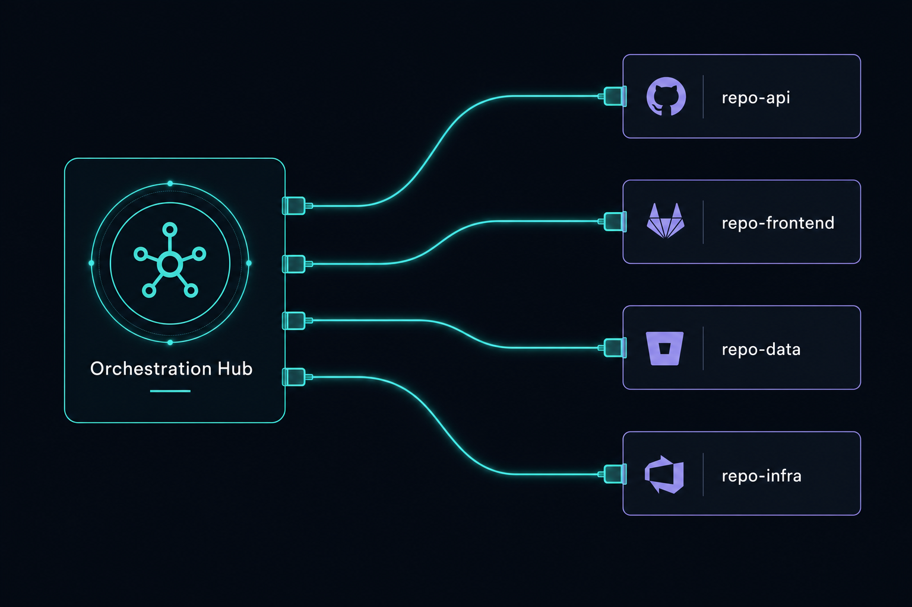
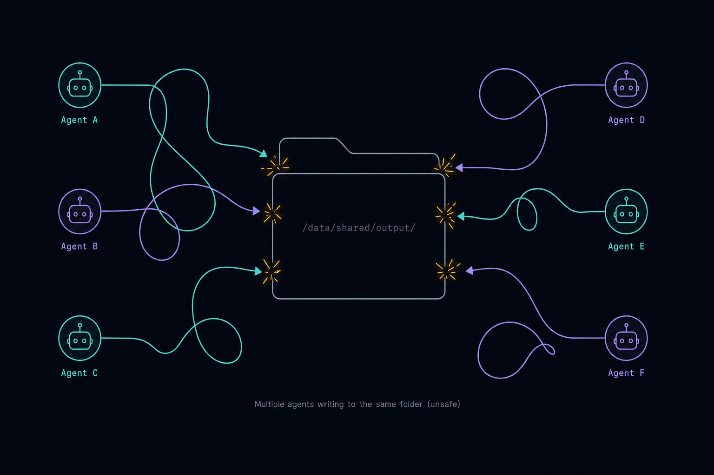
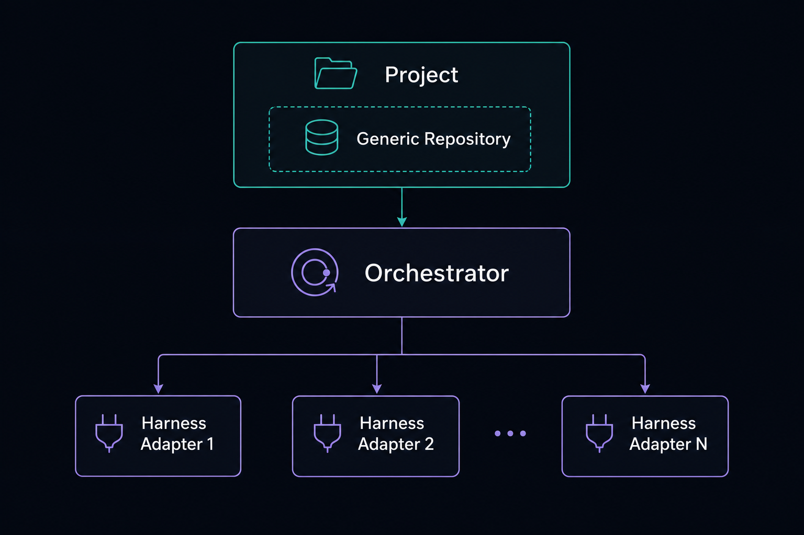
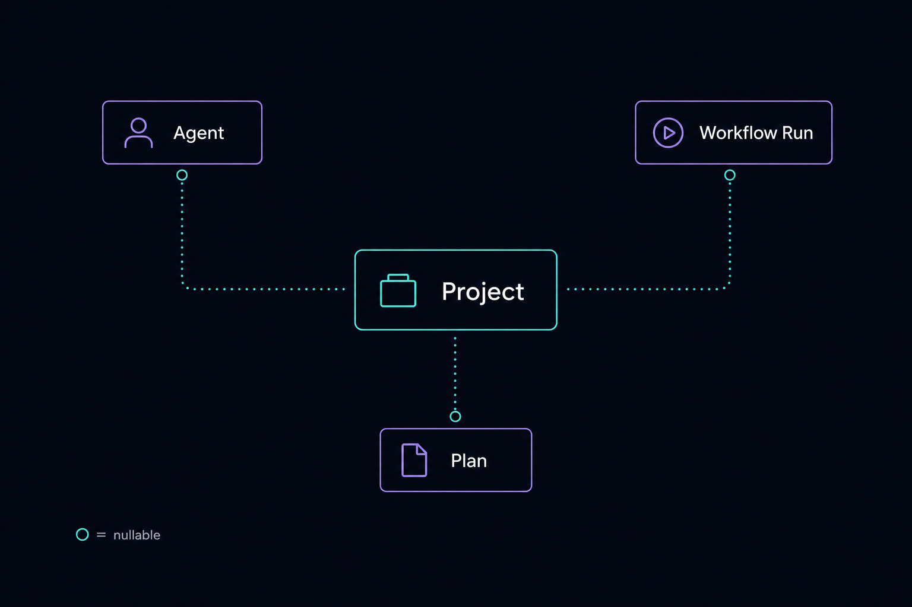
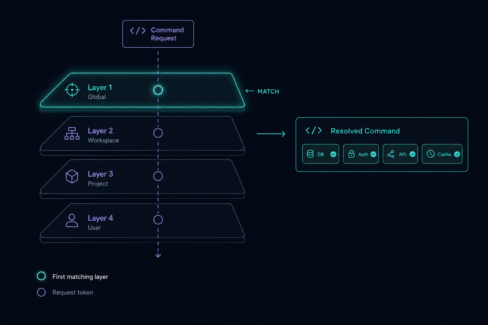
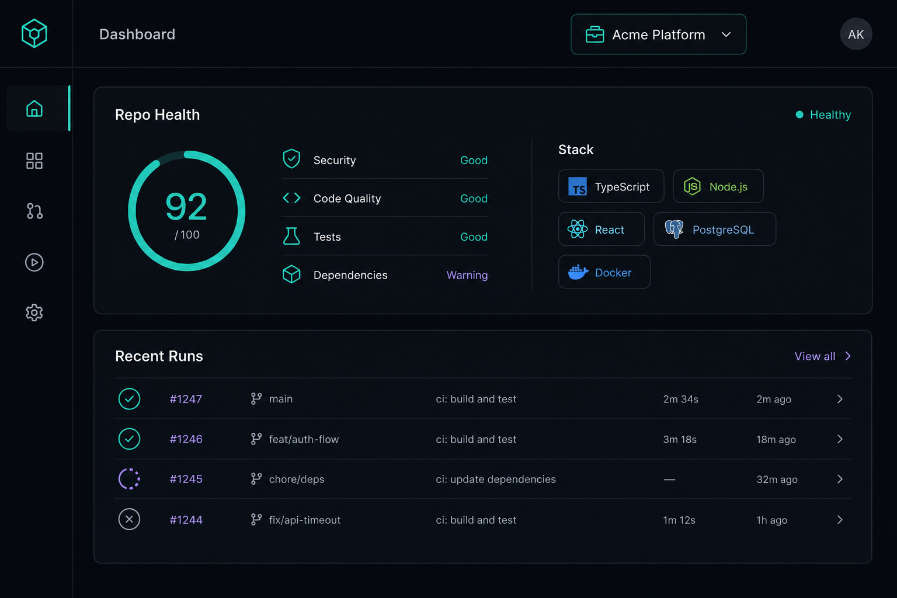
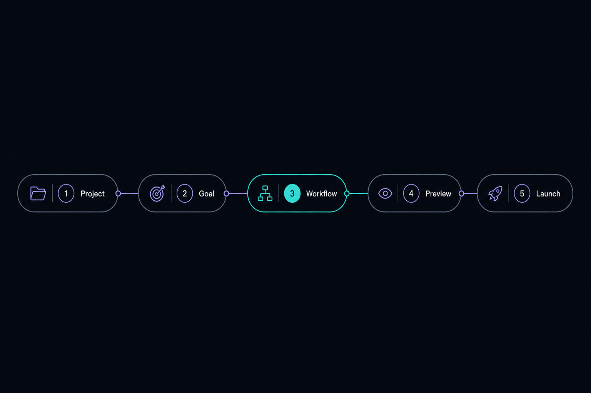
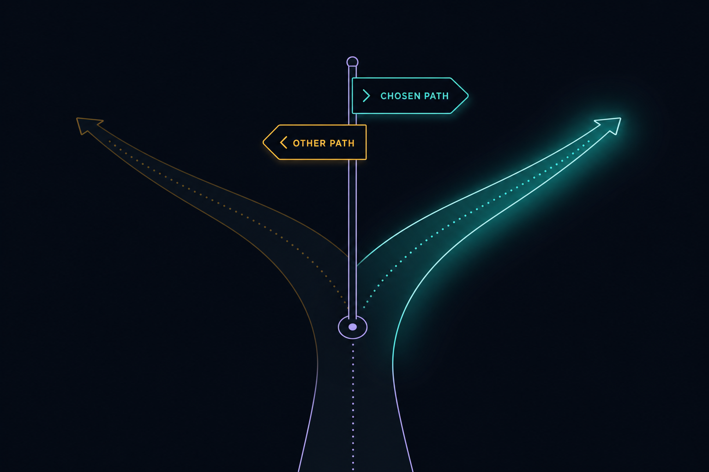
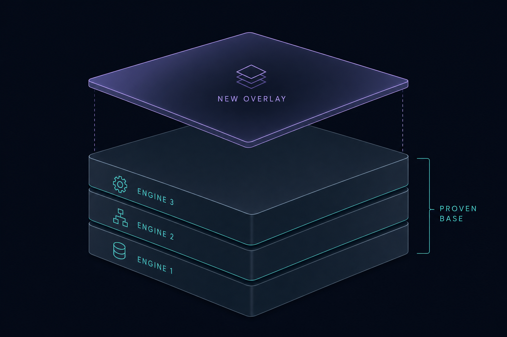

Plan: Agentic Layer Adaptor & Planning-Mode Wizard
Turn repo_builder_elixir from a self-hosted orchestration console into a portable agentic layer that adapts to any target repository — with a guided planning-mode wizard on top.

Purpose
Make repo_builder_elixir genuinely useful as an agentic layer adaptor — a control plane an operator can point at any repository and immediately drive deterministic, observable AI workflows over it, regardless of harness (Claude / pi / Cursor / future). Today the platform is a superb orchestration runtime, but the target repo it works on is an ephemeral, loosely-structured working_dir string with no identity, profiling, isolation, or scoping. This plan promotes the target repo to a first-class Project abstraction, adds a repo onboarding/adaptation step that lets the platform fit itself to a repo's existing agent conventions, introduces a stack-aware command resolution layer so the plan/build/review/fix command bodies stop being hard-wired to one language and repo shape (today: Python + uv), optionally isolates each run in a git worktree, scopes the console UI to the active project, and layers a guided Planning-Mode Wizard that takes an operator from "a repo + a goal" to a launched, budgeted, previewed ADW run — producing a durable plan artifact along the way.
uv; this Elixir repo's own commands were hand-ported once already). A real adaptor must hold different versions of command .md files per language/repo shape and resolve the right one per project. Phase 3 (Stack-Aware Command Resolution) is the answer; it extends the seams that already exist rather than inventing a parallel templating system.Problem
The platform can already run against an arbitrary directory: the orchestrator carries a nullable working_dir (orchestrator.ex), FileBrowser powers a cwd picker, the session runtime honours an operator-provided cwd (session/server.ex resolve_workspace/3), and Definitions.Adw.scan/2 discovers ADW scripts in that dir. But that is the floor, not a product. Concretely:
- No first-class target-repo identity.
working_diris a bare string on one orchestrator. There is no registry of repos, no per-repo defaults (preferred harness, model tier, budget cap, allowed ADWs), no per-repo history, and no metadata (git remote, default branch, language stack). - No adaptation to the repo. A true "adaptor layer" should profile a repo on connect: detect stack, discover
.claude/commands,AGENTS.md/CLAUDE.md, ADW scripts, and prime an orchestrator context doc. Right now ADW globbing is the only adaptation, and the system prompt only gets a raw path. - No safe per-run isolation on a real repo. When the operator supplies a working dir, sessions run directly in it (
managed? == false), so concurrent agents on the same repo can stomp each other's files and the operator's git state. There is no worktree/branch-per-run option. - No project scoping of observability. Agents,
workflow_runs, logs, and cost are global; you cannot answer "what has the platform done to this repo, and what did it cost?" - Planning is implicit. Launching an ADW means knowing the catalog slug, harness, model, and budget up front. There is no guided path from intent → previewed, costed, durable plan → launch.

Solution
Introduce a Project (Target Repo) domain that everything in the platform can scope to, plus a Repo Adapter that profiles and primes a repo on connect, a stack-aware command resolution layer, optional git-worktree isolation per run, a project-aware console, and a Planning-Mode Wizard. Each piece reuses the existing harness-blind seams — no change to the canonical Event sum type, the registry, or the session runtime contract.
- Project domain & persistence — a
projectstable +RepoBuilder.Projectscontext. A project is{name, root_path, git_remote, default_branch, stack, capabilities, command_pack, command_pack_version, default_harness, default_model_tier, budget_cap_usd, isolation_mode}. Add a nullableproject_idFK toagents,workflow_runs, and orchestrator config (back-compat:nil= "platform itself", today's behaviour). - Repo Adapter / onboarding —
Projects.Profilerinspects a root path (git metadata, stack heuristics, a typed capability map, discovered.claude/commands,AGENTS.md/CLAUDE.md, ADW scripts) and writes a primed project context consumed byorchestrator/system_prompt.exand surfaced in the UI. - Stack-aware command resolution — versioned command packs (
priv/command_packs/<pack>/<version>/) plus aCommands.Resolverthat picks the right command body per project through a precedence chain (repo-local → pinned project pack → stack-matched pack → generic base) and fills capability tokens ({{TEST_COMMAND}},{{SPEC_DIR}}, …). It extends the existingSlashCommand.scan/2precedence,SlashExpanderexpansion, andPromptStandard.TokenRegistry/Builder.render/2— not a new engine. - Worktree isolation (opt-in) —
Projects.Worktreecreates a git worktree + branch per run under a scratch base, so parallel agents never collide and changes land on a reviewable branch; falls through to direct-cwd for non-git repos or when disabled. - Project-aware console — a global project switcher in the
ConsoleLiveheader and a Project dashboard (repo health, capability map, resolved command set with provenance, discovered ADWs, recent runs, cost rollup) via newProjectComponents. - Planning-Mode Wizard — a multi-step
PlanningLiveat/plan: pick project → state goal → resolve workflow type/harness/model/budget (reusingWorkflowEngine.Catalog, theCommands.Resolver,PromptStandard.Builder,ContextWindow,Budget) → preview stack-correct resolved steps + estimated cost/context → launch. It persists a durable Plan artifact tied to the project.

Relevant Files
Existing Files
- existing
lib/repo_builder/orchestrator/orchestrator.ex— holdsworking_dir; gains an optionalproject_idand resolves project defaults. - existing
lib/repo_builder/orchestrator/system_prompt.ex—working_dir_block/1,discovered_adws/1,slash_commands_block/1; extend with the primed project-context block. - existing
lib/repo_builder/orchestrator/server.ex— spawns sessions withcwd: orchestrator.working_dir; route through the project/worktree resolver. - existing
lib/repo_builder/session/server.ex—resolve_workspace/3(managed?flag); add worktree-backed cwd resolution. - existing
lib/repo_builder/file_browser.ex— directory picker reused by the project-registration flow. - existing
lib/repo_builder/definitions/adw.ex—scan/2; called per-project by the Profiler. - existing
lib/repo_builder/definitions/slash_command.ex—scan/2already merges app ∪ working-dir (working-dir wins); becomes the top of the formal resolution precedence. - existing
lib/repo_builder/prompts/slash_expander.ex— control-owned expansion +$ARGUMENTS/$1substitution; routed through the newCommands.Resolver. - existing
lib/repo_builder/prompt_standard/token_registry.ex— closed{{TOKEN}}registry; extended with capability tokens ({{TEST_COMMAND}},{{SPEC_DIR}}, …). - existing
lib/repo_builder/workflow_engine/catalog.ex— ADW type registry the wizard renders and validates against. - existing
lib/repo_builder/workflows.ex&workflows/workflow_run.ex— add nullableproject_id; scope listing/rollup. - existing
lib/repo_builder/agents.ex&agents/agent.ex— add nullableproject_id; project-scoped roster. - existing
lib/repo_builder/budget.ex,cost_center.ex— reuse for per-project budget cap + cost rollup. - existing
lib/repo_builder/prompt_standard/builder.ex— wizard reuses for prompt assembly/preview. - existing
lib/repo_builder/orchestrator/context_window.ex— wizard reuses for context-budget estimate. - existing
lib/repo_builder_web/live/console_live.ex— add the global project switcher + active-project assign. - existing
lib/repo_builder_web/components/console_components.ex— host the switcher chip + project header. - existing
lib/repo_builder_web/router.ex— add/planand/projectslive routes. - existing
lib/repo_builder/schema.ex— sharedbinary_id+ timestamps macro for the new schema. - existing
priv/repo/seeds.exs— seed a default "self" project for back-compat.
New Files
- new
lib/repo_builder/projects.ex— theProjectscontext (onlyRepocaller for projects). - new
lib/repo_builder/projects/project.ex— typed Ecto schema + changeset (@enforce_keys,@spec, validated harness/isolation enums). - new
lib/repo_builder/projects/profiler.ex— pure-ish repo profiler: git metadata, stack heuristics, discovered conventions →profile()struct. - new
lib/repo_builder/projects/context_primer.ex— renders the profile into an orchestrator context block + a stored project README excerpt. - new
lib/repo_builder/projects/capabilities.ex— typed capability map (language,package_manager,test/build/lint/format/typecheck/runcommands,spec_dir,source_dirs,test_dir) + per-stack detection rules; operator-overridable. - new
lib/repo_builder/commands.ex&lib/repo_builder/commands/resolver.ex— the resolution context + the precedence-chain resolver returning{:ok, %Resolved{body, layer, pack, version, provenance}}. - new
lib/repo_builder/commands/pack.ex— a command pack value (id, version, root path) + pure discovery/listing ofpriv/command_packsand the operator packs dir; semver/"latest"/"auto" resolution. - new
priv/command_packs/generic/<version>/commands/**/*.md— base, language-agnostic command bodies written against capability tokens. - new
priv/command_packs/{elixir,python-uv,node,rust,go}/<version>/commands/**/*.md— stack packs that override individual commands where token-templating is insufficient. - new
lib/repo_builder/projects/worktree.ex— git-worktree create/cleanup per run; idempotent; non-git fallthrough. - new
lib/repo_builder/plans/plan.ex&lib/repo_builder/plans.ex— durable Plan artifact (project_id, goal, workflow_type, resolved steps, estimate) + context. - new
lib/repo_builder/plans/planner.ex— pure resolver: goal + project defaults + catalog → a previewable, costed plan (no side effects). - new
lib/repo_builder_web/live/planning_live.ex— the multi-step Planning-Mode Wizard at/plan. - new
lib/repo_builder_web/live/projects_live.ex— project list/registration + project dashboard at/projects. - new
lib/repo_builder_web/components/project_components.ex— typed project switcher chip, repo-health panel, capability/command-pack panel (resolved command + provenance), plan-preview card. - new
priv/repo/migrations/*_create_projects_and_scope.exs—projects+planstables and nullableproject_idFKs.
Implementation Phases
IMPORTANT: Execute every phase and task step by step, in order, top to bottom. Each phase must leave the green gate passing before the next begins.
Status markers: [] idle · [wip] in progress · [x] complete · [f] failed. All start as [].
[] Phase 1: Project (Target Repo) domain & persistence
Promote the target repo to a first-class entity without breaking the current "platform works on itself" default. Everything new is additive and the project_id FKs are nullable.

1. Schema & migration
[]CreateRepoBuilder.Projects.ProjectusingRepoBuilder.Schema: fieldsname,root_path,git_remote,default_branch,stack(:map),capabilities(:map— the resolved capability token values, Phase 2/3),command_pack(:string, default"auto"),command_pack_version(:string, default"latest"),default_harness(validated againstHarness.Registry.known/0),default_model_tier,budget_cap_usd(:decimal),isolation_mode(Ecto.Enum [:direct, :worktree], default:direct),context_primer(:text),status.[]Write@type t+@enforce_keys+ achangeset/2with@spec,validate_required,validate_inclusion(:default_harness, ...), and a unique constraint onname.[]Migration: createprojects(binary_id); add nullableproject_idFK + index toagentsandworkflow_runs; createplanstable (Phase 5 uses it, define now).[]Seed a default project row inseeds.exsrepresenting the platform repo itself (root_path = File.cwd!()), so existing global records logically map to it.
2. Projects context
[]ImplementRepoBuilder.Projectswithlist_projects/0,get_project!/1,create_project/1,update_project/2,delete_project/1,active_or_default/1— all@spec'd, the onlyRepocaller for projects.[]Addscope_by_project/2query helpers inAgentsandWorkflows(nil project_id ⇒ unscoped, current behaviour).
3. Testing Strategy
ExUnit context tests against the test repo via the existing DataCase. Cover: changeset validation (bad harness rejected, name uniqueness), CRUD round-trips, nullable-FK back-compat (an agent/run with project_id == nil still lists), and the seeded default project.
[]mix test test/repo_builder/projects_test.exs— context CRUD + changeset + scoping pass.[]mix ecto.migrate && mix ecto.rollback && mix ecto.migrate— migration is reversible.[]mix dialyzer— new specs are sound.
[] Phase 2: Repo Adapter — profiling & context priming
Make the platform adapt to a repo on connect: read what the repo already declares about agentic work and feed it into the orchestrator's system prompt and the UI.
1. Profiler
[]ImplementRepoBuilder.Projects.Profiler.profile/1returning a typedprofile(): git remote + default branch (viagitshell-out, fail-silent tonil), stack heuristics (mix.exs/package.json/pyproject.toml/Cargo.toml/go.mod→ language + build tool), and discovered conventions:.claude/commands/*,AGENTS.md/CLAUDE.mdpresence, andDefinitions.Adw.scan(root, :working_dir).[]ImplementProjects.Capabilities.detect/1: derive the typed capability map (test/build/lint/format/typecheck/run commands, package manager, spec/source/test dirs) from the detected stack — the data Phase 3 templates against. Persist it onproject.capabilities; allow operator overrides in the changeset.[]ReuseFileBrowserpath validation; never raise on a missing/unreadable repo — return partial profiles and a best-effort capability map (:unknownlanguage ⇒ empty/generic capabilities).
2. Context primer + orchestrator wiring
[]ImplementProjects.ContextPrimer.render/1: profile → a concise markdown block (stack, conventions, discovered ADWs/commands) stored onproject.context_primer.[]Extendorchestrator/system_prompt.exto inject the active project's primer alongsideworking_dir_block/1(no change when project is nil).[]On project create/refresh, run the Profiler and persist the primer; expose arefresh_profile/1inProjects.
3. Testing Strategy
Use fixture repo directories under test/support/fixtures/ (a mini Elixir repo, a mini Node repo, a bare dir) to assert deterministic profiling. Git calls are exercised against the project's own repo and guarded for absence.
[]mix test test/repo_builder/projects/profiler_test.exs— stack + convention detection across fixtures, fail-silent on missing dirs.[]mix test test/repo_builder/orchestrator/system_prompt_test.exs— primer appears when project set, absent when nil.[]mix credo --strict— every public fn specced.
[] Phase 3: Stack-aware command resolution layer
Stop hard-wiring command bodies to one language and repo shape. The architecture has three cooperating pieces, each extending an existing seam: a capability map (the small per-stack data that varies — avoids duplicating every command per language), versioned command packs (full .md overrides + explicit versioning for when templating is not enough — the "hold different versions" requirement), and a resolver that combines a precedence chain with capability-token fill and reports provenance.

.claude/commands/<name>.md always takes precedence: the platform adapts to the repo, not the reverse. Definitions.SlashCommand.scan/2 already encodes exactly this (working-dir beats app-root); Phase 3 generalizes it into a formal, versioned chain.1. Capability tokens (anti-duplication core)
[]ExtendPromptStandard.TokenRegistrywith a documented, closed set of capability tokens:{{TEST_COMMAND}},{{BUILD_COMMAND}},{{LINT_COMMAND}},{{FORMAT_COMMAND}},{{TYPECHECK_COMMAND}},{{RUN_COMMAND}},{{PACKAGE_MANAGER}},{{SPEC_DIR}},{{SOURCE_DIRS}},{{TEST_DIR}}.[]Fill these via the existingPromptStandard.Builder.render/2machinery from the project'scapabilitiesmap (Phase 2) — one base command body works across every stack that supplies the tokens; no per-language copy needed for the common case.
2. Versioned command packs
[]ImplementCommands.Pack: discover packs underpriv/command_packs/<pack>/<version>/commands/**/*.mdplus a configurable operator-packs dir; resolve"latest"(newest version) and"auto"(the pack matching the project's detected stack). Pure, fail-silent listing — a missing dir yields[].[]Ship agenericbase pack (commands written entirely against capability tokens) plus stack packs (elixir,python-uv,node,rust,go) that override only the individual commands where prose genuinely differs. Port this repo's current Elixir/mixcommands into theelixirpack as the reference migration.
3. Resolver + integration
[]ImplementCommands.Resolver.resolve(project, name)walking the precedence chain — repo-local.claude/commands→ pinned project pack/version → stack-matched pack →genericbase — first hit wins, then fill capability tokens, returning{:ok, %Resolved{body, layer, pack, version, provenance}}or{:error, :not_found}.[]RoutePrompts.SlashExpanderthrough the resolver (keeping its$ARGUMENTS/$1substitution and reserved-command protection), and makesystem_prompt.exslash_commands_block/1list the resolved set for the active project with provenance. Nil project ⇒ today's app ∪ working-dir behaviour, unchanged.
4. Testing Strategy
Fixture packs under test/support/command_packs/ + fixture repos (one with a repo-local override, one without). Assert: precedence order (repo-local beats pinned pack beats stack pack beats generic), "auto"/"latest"/pinned-version resolution, capability-token fill from a project capability map, provenance correctness, and that an unknown command yields {:error, :not_found} (SlashExpander then passes the literal through, unchanged).
[]mix test test/repo_builder/commands/resolver_test.exs— precedence, version resolution, token fill, provenance.[]mix test test/repo_builder/prompts/slash_expander_test.exs— expansion via resolver; no regression to existing pass-through/reserved behaviour.[]mix dialyzer— resolver/pack/capabilities contracts sound.
[] Phase 4: Git-worktree isolation per run (opt-in)
Give parallel agents a safe, reviewable place to work on a real repo without stomping the operator's tree. Strictly opt-in via project.isolation_mode == :worktree; :direct preserves today's behaviour exactly.
1. Worktree module
[]ImplementProjects.Worktree.checkout/2:git worktree add <scratch_base>/<run_id> -b adw/<run_id> <default_branch>; returns{:ok, path}or falls through to direct cwd for non-git repos.[]Implementcleanup/1(git worktree remove --force) — idempotent, tolerant of already-removed trees; retain-on-failure option mirroring the session workspace policy.
2. Session-runtime integration
[]Threadisolation_modethroughorchestrator/server.exspawn opts intosession/server.exresolve_workspace/3::worktree⇒ provision a worktree-backed cwd (managed cleanup);:direct⇒ unchanged.[]Record the worktree path + branch on theworkflow_runfor the UI handoff (branch name surfaced for PR/merge).
3. Testing Strategy
Drive against a throwaway git fixture repo created in setup; assert worktree creation, branch naming, isolation (two runs get distinct trees), and idempotent cleanup. Non-git dir asserts the direct fallthrough. No external harness needed (Fake adapter).
[]mix test test/repo_builder/projects/worktree_test.exs— create/isolate/cleanup + non-git fallthrough.[]mix test test/repo_builder/session/server_test.exs— worktree cwd wired without regressing direct/managed paths.[]mix test --warnings-as-errors— no regressions in the session suite.
[] Phase 5: Project-aware console UI
Surface projects in the live UI: a global switcher, a registration flow reusing the directory picker, and a project dashboard. Keep ConsoleLive's streams-based, flat-memory rendering intact.

1. Project switcher + scoping
[]AddProjectComponents.switcher/1to theConsoleLiveheader; selecting a project sets anactive_projectassign and scopes the agent roster / run lists / cost badges.[]Registration modal reusesFileBrowser(paste-path + navigate); on confirm, create the project and run the Profiler (Phase 2), showing the detected stack/conventions before save.
2. Project dashboard
[]BuildProjectsLive(/projects): list projects; per-project panel with repo health (stack badges, branch, isolation mode), discovered ADWs/commands, recent runs, and a cost rollup viaCostCenter.Rollup.[]Add a command-pack panel: show the project's capability map, the pinned pack + version (with a picker forauto/latest/explicit version), and a per-command resolved preview with provenance (which layer/pack/version won) — letting an operator confirm or override how each command resolves for this repo.[]Add routes for/projectsinrouter.ex; link the switcher's "manage" action to it.
3. Testing Strategy
Phoenix.LiveViewTest for switcher selection, registration round-trip (with a fixture dir), and dashboard rendering. Assert scoping changes the rendered roster and that nil-project ("platform") remains selectable.
[]mix test test/repo_builder_web/live/projects_live_test.exs— register, switch, dashboard render.[]mix test test/repo_builder_web/live/console_live_test.exs— switcher scopes roster; no regression to existing console flows.[]mix format --check-formatted— heex/ex formatting clean.
[] Phase 6: Planning-Mode Wizard
A guided, multi-step LiveView that takes the operator from project + goal to a previewed, costed, launched ADW run, persisting a durable Plan artifact. It composes existing engines; it does not invent a new execution path.

1. Pure planner + Plan artifact
[]ImplementRepoBuilder.Plans.Planner.resolve/1:{project, goal, workflow_type, overrides}→ a previewable plan — resolved step list (viaWorkflowEngine.Catalog.steps/2), per-step prompt previews resolved for the project's stack (viaCommands.Resolver+PromptStandard.Builder, so the preview shows the real stack-correct command body and its provenance), estimated context (viaOrchestrator.ContextWindow), and an estimated cost band (viaHarness.Pricing/ cost estimate). Pure, no side effects.[]ImplementRepoBuilder.Plans+Plans.Planschema to persist a plan (project_id,goal,workflow_type,resolved_stepsJSONB,estimateJSONB,status, optionalworkflow_run_idonce launched).
2. Wizard LiveView
[]BuildPlanningLiveat/planwith steps: (1) pick/register project, (2) state goal + classify intent (feat/fix/chore via lightweight keyword heuristic), (3) choose workflow type + harness + model tier + budget cap (defaults pre-filled from the project), (4) preview resolved steps, prompt previews, context + cost estimate, and worktree branch name, (5) confirm → persist Plan + launch.[]Launch reuses the existing path: enforceBudget.Guardagainst the cap, then create theworkflow_run/ start the ADW exactly as the console does today; link the run back to the Plan.[]Render the persisted Plan as a shareable read-only page (project-scoped), so plans are durable artifacts — mirroring this HTML plan's lifecycle.
3. Testing Strategy
Unit-test the pure Planner.resolve/1 (deterministic steps, estimate shape, budget-cap interplay). LiveViewTest walks the full wizard against the Fake adapter and asserts a launched run + persisted plan. Assert the budget guard blocks a plan whose estimate exceeds the cap.
[]mix test test/repo_builder/plans/planner_test.exs— resolution + estimate + budget interplay.[]mix test test/repo_builder_web/live/planning_live_test.exs— full wizard → launch + persisted plan.[]mix test --warnings-as-errors— full suite green.
[] Phase 7: Docs, seeds & full green gate
Make the new capability discoverable and prove the whole platform is still green end-to-end.
1. Documentation & seeds
[]UpdateREADME.md: new routes (/plan,/projects), the Project/adaptor model, isolation modes, and the planning wizard.[]UpdateAGENTS.mdwith the Projects context conventions and the "adding a target repo" flow.[]Add anai_docs/agentic-layer-adaptor.mddescribing the adaptor seam, plus a command-pack authoring guide (capability tokens, pack layout, versioning, precedence, how to add a new stack pack).
2. Testing Strategy — the project-wide green gate
The five-command green gate is the contract for "done". It must pass verbatim, plus a manual live-acceptance against a real external repo (the one new manual step).
[]mix compile --warnings-as-errors— clean compile.[]mix format --check-formatted— formatting clean.[]mix credo --strict— lint + @spec gate clean.[]mix test --warnings-as-errors— full suite green (existing + new).[]mix dialyzer— no new contract violations.[]Manual: register an external git repo as a project, run the wizard end-to-end with the Fake adapter, confirm a worktree branch + persisted plan.
Validation Commands
Execute these to validate the entire plan is complete:
[]mix compile --warnings-as-errors— the new modules compile clean under set-theoretic + warnings-as-errors.[]mix format --check-formatted— all new/changed files formatted.[]mix credo --strict— every public function carries an@spec.[]mix test --warnings-as-errors— existing 146+ tests plus the new Projects/Profiler/Commands.Resolver/Worktree/Planner/LiveView tests all pass.[]mix dialyzer— no new contract or opacity violations.[]mix ecto.rollback --all && mix ecto.migrate— the new migration is fully reversible.[]Live acceptance: point a new Project at an external repo of a different language (e.g. a Node or Rust repo) and run the Planning wizard to a launched run — confirming the resolved command bodies use that repo's stack (capability tokens / stack pack), not Python/uv.
[f] and move on if possible.Questionables

Should "Project" be a new entity, or just richer metadata on the orchestrator's working_dir?
Assumption: new entity. A bare working_dir cannot carry per-repo defaults, history, cost rollup, or be shared across multiple orchestrators/runs. A first-class projects row with nullable FKs is additive and back-compatible (nil = today's "platform itself"), and it is what makes scoping, dashboards, and the wizard coherent. Reversible: the orchestrator keeps working_dir as the resolved path.
Command adaptation: capability tokens (one template) vs full per-stack .md files (N copies)?
Assumption: both, layered — tokens first, full override as the escape hatch. Most language variation is a handful of values (test/build/lint/run commands, spec dir), so a single templated command using {{TEST_COMMAND}}-style capability tokens covers most stacks with zero duplication. When prose genuinely diverges (e.g. Elixir's compile-warnings-as-errors + Dialyzer flow vs Python's uv flow), a stack pack overrides just that one command file. This avoids both extremes: no giant token-soup template that fits no language well, and no N-fold copy of every command. The resolver makes the choice per-command, not per-pack.
Where do operator-authored packs live, and how are they versioned?
Assumption: built-in packs ship in priv/command_packs/; operator packs live in a configurable dir; both are versioned by directory. A pack is <pack>/<version>/commands/**. A Project pins {command_pack, command_pack_version} with "auto" (resolve by detected stack) and "latest" (newest) as the convenient defaults, and an explicit version for reproducibility. This is exactly the "hold different versions of command md files" requirement — versions are first-class and pinnable, so evolving a pack never silently changes a pinned project's behaviour.
Should the target repo's own commands always win over a pinned pack?
Assumption: yes — repo-local is the top of the precedence chain. This is the adaptor principle: a repo that ships its own .claude/commands knows itself best, and the platform should defer to it (this also matches the existing SlashCommand.scan/2 "working-dir wins" behaviour). The operator can still force a pack by authoring a repo-local override or, as future work, a per-project "ignore repo-local commands" toggle — but the default honours the repo.
Default isolation mode — :direct or :worktree?
Assumption: default :direct. Worktree isolation is powerful but surprises operators who expect changes in their actual tree, and it requires a git repo. Default to today's behaviour and make :worktree an explicit, per-project opt-in surfaced in the registration flow. Revisit if parallel-run collisions prove common.
Does the Planning wizard call an LLM to draft the plan, or stay deterministic?
Assumption: deterministic first. The wizard resolves the plan purely from the catalog + project defaults + prompt builder + cost estimate (no model call), keeping it fast, free, and testable. An optional "ask the orchestrator to refine this plan" step (which does spend tokens) is noted as future work, not in scope for the first cut.
How are non-git target repos handled?
Assumption: graceful degradation. The Profiler returns partial metadata (no remote/branch) and :worktree falls through to :direct. A non-git directory is still a valid Project; it just loses branch-per-run isolation and git metadata.
Should project_id become required after migration?
Assumption: stays nullable. Making it NOT NULL would force a backfill and break the "platform-on-itself" path that all current tests assume. The seeded default project gives a logical home for legacy rows without a hard constraint. Re-evaluate only if a future milestone makes every record project-bound.
Per-project budget — new mechanism or reuse cost centers?
Assumption: reuse. Budget/Budget.Guard and CostCenter.Rollup already exist; a project's budget_cap_usd feeds the existing guard and the rollup is filtered by project_id. No parallel budgeting system.
Notes
Why this is the right leverage point
The hard, novel parts of this platform — the canonical harness-blind Event sum type, the erlexec session runtime, the zero-orphan ledger, the durable workflow engine — are already built and proven (M0–M7, 146+ tests). The thing standing between "a great orchestration console for this repo" and "a control plane for any repo" is not more runtime; it is a thin Project/adaptor layer and a guided on-ramp. This plan deliberately adds only seams and UI on top of the existing engines, touching no canonical contract.
- Repo path picking →
FileBrowser(already powers the cwd picker). - ADW discovery per repo →
Definitions.Adw.scan/2withsource: :working_dir. - Command precedence (repo wins) →
Definitions.SlashCommand.scan/2(already working-dir-wins) +SlashExpander. - Token substitution →
PromptStandard.TokenRegistry+Builder.render/2(extended with capability tokens). - Workflow shapes →
WorkflowEngine.Catalog. - Prompt previews →
PromptStandard.Builder. - Cost/context estimate →
Harness.Pricing+Orchestrator.ContextWindow. - Budget enforcement + rollup →
Budget.Guard+CostCenter.Rollup. - Live rendering discipline →
ConsoleLivestreams + typed components.
Command resolution architecture (Phase 3, in depth)
The "every command assumes Python + uv" problem is solved by separating what varies from what's written once, across three layers:
| Layer | What it holds | Varies per | Extends |
|---|---|---|---|
| Capability map | Small typed values: test/build/lint/format/typecheck/run commands, package manager, spec/source/test dirs | Stack (auto-detected, operator-overridable) | Profiler → project.capabilities |
| Command packs | Versioned dirs of command .md bodies; generic (token-templated) + per-stack overrides | Stack and version | priv/command_packs; Definitions.SlashCommand shape |
| Resolver | Precedence walk + token fill + provenance | Project (active) | SlashExpander, TokenRegistry, Builder.render/2 |
Resolution precedence for a command name, first match wins:
1. <project.root>/.claude/commands/<name>.md # the target repo wins (adaptor principle)
2. priv/command_packs/<pinned_pack>/<pinned_version>/commands/<name>.md
3. priv/command_packs/<detected_stack>/<resolved_version>/commands/<name>.md
4. priv/command_packs/generic/<version>/commands/<name>.md
└─ then fill {{TEST_COMMAND}} … from project.capabilities, attach provenanceThe win: a new language is usually just a capability map (a dozen values) — no command files at all, because the generic pack's token-templated bodies already work. Only genuinely divergent commands need a stack-pack override, and versioning lets packs evolve without breaking pinned projects. Crucially, none of this touches the harness-blind core or the canonical Event contract.
Typed-standard compliance
Every new module obeys the enforced standard (ai_docs/typed-elixir-standard.md): @spec on every public function (hard Credo gate), typedstruct/@enforce_keys for domain structs, {:ok, t} | {:error, reason} over raising, validated enums over open strings (except the intentionally-open harness identity), and Dialyzer-clean contracts. The projects/plans contexts are the only Repo callers for their tables.
Sequencing & risk
Phases are ordered so each is independently shippable and green: Phase 1 (data) and Phase 2 (adaptation) deliver value even without UI; Phase 3 (worktrees) is opt-in and isolated; Phase 4 (UI) and Phase 5 (wizard) are the operator-facing payoff. The largest risk is UI surface area in the 3,700-line ConsoleLive — mitigated by isolating new UI in ProjectsLive/PlanningLive and a dedicated ProjectComponents module, touching ConsoleLive only for the switcher.
Future work (explicitly out of scope)
- LLM-assisted plan refinement step in the wizard (token-spending).
- Auto-PR/merge handoff from a worktree branch (push +
gh pr create). - Multi-repo workflows (one ADW spanning several projects).
- Per-project secret scoping beyond the current app-wide env model.

Amendments
2026-06-23 — Added Phase 3: Stack-Aware Command Resolution Layer
The operator flagged that the platform's commands, ADW step prompts, and validators are geared to one repo structure and toolchain (Python + uv), whereas real target repos span many languages — and that the platform needs to hold different versions of command .md files. Inserted a new Phase 3 designing a three-layer architecture: a per-stack capability map (the small varying data, avoids duplicating commands per language), versioned command packs under priv/command_packs/<pack>/<version>/ (full .md overrides + explicit pinnable versions), and a Commands.Resolver that walks a precedence chain (repo-local → pinned pack → stack pack → generic base), fills capability tokens, and reports provenance. The design deliberately extends existing seams (SlashCommand.scan/2 already does repo-local-wins, SlashExpander, TokenRegistry/Builder.render/2) rather than adding a parallel templating engine. Renumbered the former Phases 3–6 (Worktree→4, UI→5, Wizard→6, Docs→7); extended Phase 1 schema (capabilities, command_pack, command_pack_version) and Phase 2 (capability detection); added files, three Questionables, a Notes architecture section + diagram, and tightened global validation + live acceptance to prove cross-language adaptation.